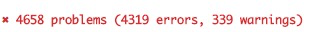
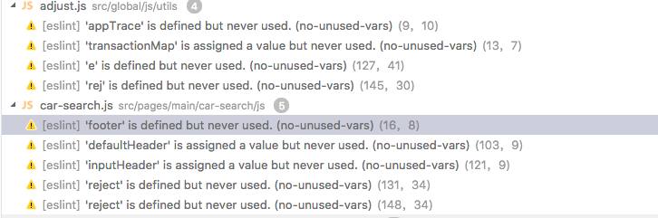
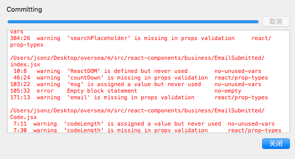

背景
最近部门进了挺多新前端，有实习生 有应届生，人一多
代码规范就不能完全依赖 “口口相传” 去约束了， 特别是看到一堆的 有分号，无分号，四缩进，二缩进等问题
对于有小小代码洁癖的我实在是受不了 于是终于在项目中 集成各种用来 规范（约束）的工具。
主要有：
- editorConfig 编辑器配置文件
- Prettier 批量格式化代码
- Eslint js、jsx 文件代码检查规范
- Flow (暂未集成)
- lint-staged 提交到git之前跑一次代码检查
本地一些环境：node 8.9.4, npm 5.6.0, oxs 10.13.3， 编辑器 vscodeeeeee
EditorConfig
What is EditorConfig?
官网给出的答案是：editorconfig帮助开发人员在不同的编辑器和ide之间定义和维护一致的编码风格。
简单来说就是跨编辑器使用同一份代码缩进等配置
EditorConfig 集成起来十分简单， 大概就是创建配置文件，安装相应的编辑器插件即可。
- 创建
.editorconfig文件 - 安装对应编辑器的插件
我用的是 vscode 直接安装这个 EditorConfig for vs code，安装完重启，编辑器就会根据配置文件里面的配置来控制代码缩进等行为
附上项目的配置文件1
2
3
4
5
6
7
8
9
10
11
12root = true
[*]
charset = utf-8
end_of_line = lf # mac linux/unix 都用lf。 window 设置 cr 在 *nix 有问题
indent_size = 4
indent_style = space
max_line_length = 120
trim_trailing_whitespace = true
[*.jsx]
indent_size= 2
Prettier
现在有了一些基本的配置，以后写的代码就可以比较规范一点点点，但是原来的旧代码怎么办呢？
不可能一个文件一个文件去打开吧，不完全统计 项目有上千个编辑的文件….一个一个去手动打开不符合程序员的风格
so… Prettier就是为我们做这些事情的
- 安装:
npm i --save-dev prettier - 创建
.prettierrc配置文件
该配置文件会继承editorConfig的配置 - 向
package.json添加脚本:"prettier": "prettier --write ./*"我项目里面用的是
"prettier": "prettier --write './src/**/*.js' './src/**/*.jsx' './src/**/*.css' './src/**/*.scss'", - 创建
.prettierignore文件，用来忽略一些文件 && 目录 - 一切准备就绪之后 !!!!
npm run prettier呼呼 看到提示一千个文件更改记录 哈哈哈
附上配置文件:1
2
3
4
5
6
7
8
9
// https://prettier.io/docs/en/options.html
module.exports = {
trailingComma: "es5", // 数组 对象尾随逗号 [arr, ] { obj, }
// bracketSpacing: true, // 对象空格 { foo: bar }, false=> {foo:bar}
// jsxBracketSameLine: false, // jsx闭标签是否另起一行 <Test></Test>
// arrowParens: 'avoid', // 箭头函数是否省略括号 a=> a, (a)=> a
singleQuote: true, // 单引号
}
1 | /node_modules |
Eslint
有了上面介绍的 editor、prettier还是远远不够的，因为 js语法 不是很严格，比如有没有分号啊 之类的问题还是要用 eslint 来约束的。
在很多年前，我是特别反感 Eslint 的，因为经常写得一点不规范，直接就报 error 整个项目跑不起来。
但是 存在即合理，现在觉得这东西贼好用。
- 安装 eslint:
npm i --save-dev eslint - 启动引导脚本:
./node_modules/.bin/eslint --init配置.eslintrc。这里可以直接选
Use a popular style guide然后选行业比较看好的规范airbnb的，原先是打算选这个，但是后面发现和项目现有的规范很不相同，所以后面就走回答问题选项。 - 向
package.json添加脚本:"eslint": "eslint --fix ./"我写的是
"eslint": "eslint --fix './src/**/*.{jsx, js}'", - 创建
.eslintignore文件，并向其添加需要忽略的文件或目录。 - 安装 编辑器 eslint 插件
- 配置编辑器，我这里用的是 vscode
- “eslint.autoFixOnSave”: true
开启eslint 检查 - “javascript.validate.enable”: false
关闭vscode自带的js检查
- “eslint.autoFixOnSave”: true
eslint插件会智能检查编辑状态的 JS 文件，并自动修复；npm run eslint 脚本可以检查和智能修复“对应的文件”。 不过亲测修复的效果比较一般，更多的报错需要手动去处理
在配置eslint的时候 遇到了几个比较郁闷的地方
可以先把一些报错项改为 警告项，慢慢迭代 免得一上eslint 要停几天来修改原来的文件
一些简单的处理可以写脚本去做
比如说之前项目写的比较不规范，出现了很多类似：export default from 'file-path'的语句，但是eslint不认，觉得这是不符合规范的，需要改为 export { default } from 'file-path'
这点我也比较认同，但是 这么多个文件，一个一个改是不存在的，所以写了个短脚本去处理
1 | const fs = require('fs'); |
webpack别名引用 路径报错问题
安装对应的 eslint 处理插件: npm i --save-dev eslint-import-resolver-webpack eslint-plugin-import
在 .eslint.js 里面加这段配置
1 | "settings": { |
其他注意问题
项目是在 浏览器运行， 又是 es6语法， 又有一些node脚本，会有一些全局的变量引用提示报错，怎么办？
改配置!1
2
3
4
5"env": {
browser: true,
es6: true,
node: true,
},
项目是后端模版渲染的，会有一些全局变量，eslint报错怎么办？
改配置!1
2
3
4
5
6
7
8
9
10
11
12
13
14
15"globals": {
__DEV__: true,
__HTTPS__: true,
FB: true,
ga: true,
$: true,
ercjs: true,
google: true,
IS_APP: true,
i18n: true,
Zepto: true,
AdjustEvent: true,
Adjust: true,
fbq: true,
},
项目用了很多新语法 eslint 不识别, 用了 react 怎么办？
改配置…具体的 谷歌一下 一堆答案 不再赘述
Flow
Flow可以理解为 很轻量型 无侵入的 静态类型检查
项目暂时没有考虑集成，所以这里不做过多介绍
git-check
既然我们 有了编辑器的配置， js编辑实时检查， 但是如果有些小伙伴不遵守规则 搞事情怎么办呢？
这时候我们可以在最后一个流程加上验证的部分， 在git 提交的时候跑一些脚本去验证，如果通过就给提交，不通过就提示错误
lint-staged 可以帮我们做这些事情
- 安装 lint-staged husky:
npm i --save-dev lint-staged husky - 向
package.json添加运行脚本"precommit": "lint-staged"这时候在git commit 之前会跑 lint-staged的东西
- 再向
package.json添加内容: 注意，这时候不是加在scripts里面，而是加在同级"lint-staged": { // 上面提供的“自动化脚本” "*.js": ["eslint --fix", "git add"], "*.json": ["prettier --write", "git add"], "*.css": ["prettier --write", "git add"], "*.scss": ["prettier --write", "git add"], "*.md": ["prettier --write", "git add"] }因为项目是本地打包再推远程，所以我的配置是指定了 src下的
"src/**/*.js": [ "eslint --fix", "git add" ], "src/**/*.jsx": [ "eslint --fix", "git add" ], "src/**/*.css": [ "prettier --write", "git add" ], "src/**/*.scss": [ "prettier --write", "git add" ]
这样在提交之前就会对 新增的(git add) .js 文件执行 "eslint --fix" 脚本， 以此类推…
End
emmmmmmmmmmmmmmmmmmmmmmmmm 虽然看起来挺简单的，但是整套结合项目去折腾下来 挺多坑的。
特别是eslint这块的配置
第一次跑 airbnb 的项目： 
目前项目配置官方推荐的 esling 之后:
把error改为 warn保证项目能跑起来: 
git提交检查失败: 
最后附上eslint配置1
2
3
4
5
6
7
8
9
10
11
12
13
14
15
16
17
18
19
20
21
22
23
24
25
26
27
28
29
30
31
32
33
34
35
36
37
38
39
40
41
42
43
44
45
46
47
48
49
50
51
52
53
54
55
56
57
58
59
60
61
62
63
64
65
66
67
68
69
70
71const getWebpackConfig = require('./config/webpack.dev.config')(process.cwd());
module.exports = {
"parser": "babel-eslint",
"extends": ['eslint:recommended', "plugin:react/recommended", "prettier"],
"parserOptions": {
"ecmaVersion": 8,
"sourceType": "module",
"ecmaFeatures": {
"jsx": true,
"modules": true,
"experimentalObjectRestSpread": true
}
},
"plugins": ["react"],
"settings": {
'import/resolver': {
webpack: {
config: getWebpackConfig,
}
},
"react": {
"pragma": "React",
"version": "16.1.1"
}
},
"env": {
browser: true,
es6: true,
node: true,
},
"globals": {
__DEV__: true,
__HTTPS__: true,
FB: true,
ga: true,
$: true,
ercjs: true,
google: true,
IS_APP: true,
i18n: true,
Zepto: true,
AdjustEvent: true,
Adjust: true,
fbq: true,
},
"rules": {
"sort-imports": 0,
"import/first": 0,
"import/no-named-as-default": 0,
"import/no-named-as-default-member": 0,
"import/extensions": 0,
"prefer-destructuring": 0,
"no-new": 0,
"react/jsx-filename-extension": 0,
"no-plusplus": 0,
"func-names": 0,
"no-console": 0,
"no-useless-escape": 0,
"semi": 2,
// 这些规则后面会改为错误，暂时先警告
"no-unused-vars": 1,
"react/prop-types": 1,
"react/no-string-refs": 1,
"react/jsx-key": 1,
"react/no-unescaped-entities": 1
}
}